ABOUT
ABOUT US
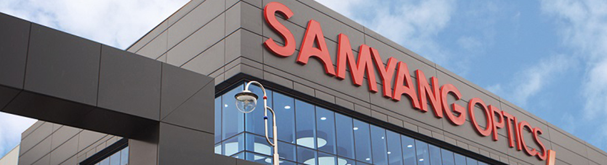
-
2018
- TIPA AWARD 2018 선정 (AF 35mm F2.8 FE)
- 프리미엄 매뉴얼 포커스 렌즈 XP 50mm 출시
- Canon EF 마운트용 AF 14mm F2.8 EF 출시
- 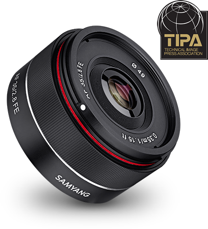
- 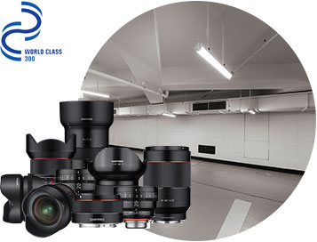
-
2017
- 미러리스용 풀프레임 AF 35mm F1.4 FE 포토렌즈 출시
- 니콘 마운트 대응 XP 14mm F2.4 출시
- 미러리스용 풀프레임 AF 35mm F2.8FE 포토렌즈 출시
- 풀프레임 대응 씨네 렌즈 VDSLR 16mm T2.6 출시
- 영상-영화 전문 시네 렌즈 XEEN 20mm T1.9 출시
- 월드클래스 300 기업 선정
- 코스탁 (KOSDAQ) 상장
- iF 디자인 어워드 제품 부문 수상(AF)
-
2016
- GOOD DESIGN 수상 (XP)
- XP 85mm E-Photozine Gear of the Year 수상
- XP 14mm F2.4 발표
- XP 85mm F1.2 발표
- 미러리스용 AF 14mm F2.8 FE 포토렌즈 출시
- 미러리스용 AF 50mm F1.4 FE 포토렌즈 출시
- 영상-영화 전문 시네렌즈 XEEN 16mm T2.6 출시
- DSLR용 20mm F1.8 포토, T1.9 시네 렌즈 출시
- 미러리스용 35mm F1.2 포토, T1.3 시네 렌즈 출시
- 영상-영화 전문 시네렌즈 XEEN 135mm T2.2 출시
- 영상-영화 전문 시네렌즈 XEEN 14mm T3.1 출시
- 영상-영화 전문 시네렌즈 XEEN 35mm T1.5 출시
- 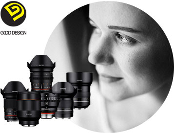
- 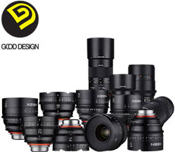
-
2015
- GOOD DESIGN 수상 (XEEN)
- DSLR용 135mm F2.0 포토, T2.2 시네 렌즈 출시
- DSLR용 100mm Macro F2.8 포토, T3.1 시네 렌즈 출시
- 미러리스용 21mm F1.4 포토, T1.5 시네 렌즈 출시
- 미러리스용 50mm F1.2 포토, T1.3 시네 렌즈 출시
- 영상영화전문 시네렌즈 XEEN 3개 렌즈 출시
-
2014
- SLR 교환렌즈 10mm F2.8, 10mm T3.1, 12mm F2.0 개발 및 출시
- 미러리스 교환렌즈 8mm T3.1,
7.5mm T3.8, 12mm T2.2, 300mm F6.3 개발 및 출시 - DSLR 교환렌즈(MF) 50mm F1.4, 50mm T1.5 개발 및 출시
- DSLR 교환렌즈(MF) 12mm F2.8, 12mm T3.1 개발 및 출시
- 50mm T1.5 VIP ASIA Awards 2014 수상
- 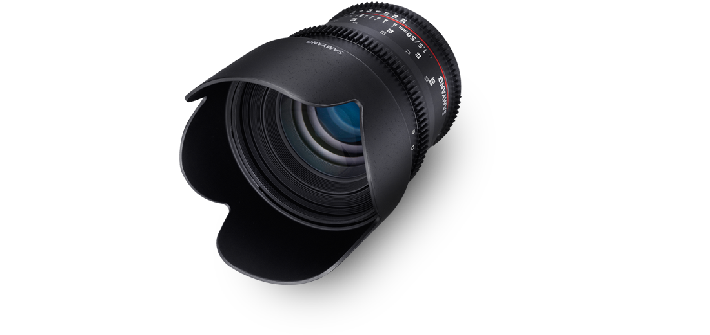
- 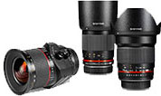
-
2013
- DSLR교환렌즈 TS 24mm F3.5 개발 및 출시
- DSLR교환렌즈 300mm F6.3 개발 및 출시
- DSLR교환렌즈 16mm F2.0 개발 및 출시
-
2012
- DSLR교환렌즈 24mm F1.4 개발 및 출시
- DSLR교환렌즈 8mm F2.8 개발 및 출시
- 제49회 무역의 날 ‘삼천만불 수출의 탑’ 수상
-

- 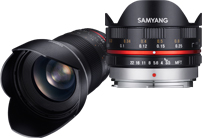
-
2011
- DSLR교환렌즈 7.5mm F3.5 개발 및 출시
- DSLR교환렌즈 35mm F1.5 개발 및 출시
-
2010
- DSLR 교환렌즈 14mm f/2.8 ED AS IF UMC 개발 및 출시
- Film Video Foto 어워드 Video부분 수상
- 기종:8mm f/3.5 Aspherical IF MC Fish-eye Film Video Foto(폴란드)주최
- Gear of the Year 어워드 Best Budget Lens 수상
- 기종:85mm f/1.4Digital Photo, Practical Photography(영국)주최
- 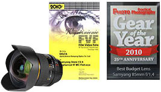
- 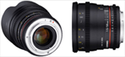
-
2009
- DSLR 교환렌즈 8mm F3.5 개발 및 출시
-
2008
- DSLR 교환렌즈 85mm F1.4 개발 및 출시
- 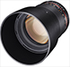
- 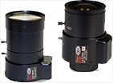
-
2006
- CCTV MEGA PIXEL LENS 개발 및 출시
- HYBRID 비구면, PLASTIC 비구면 생산
-
2005
- ISO 14001 (환경인증 획득)
-
2003
- 부품 소재 전문 기업 인증 획득
-
2002
- SO 9001 획득
- 본사 및 생산공장 이전(신축)
- (대지3,700평, 건평3,000평)
- 주식회사 삼양옵틱스 상호 변경
- 제32회 정밀기술진흥대회 국무총리상 수상
- 산업자원부(산업기술시험원) 주최
- 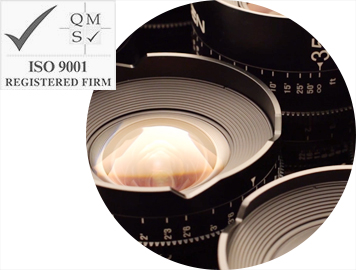
-
2001
- CCTV LENS(550,2810,358)개발 및 출시
-
1999
- 수출유망중소기업 선정(중소기업진흥공단)
-
1993
- 대통령상 수상(과학기술진흥공로)
- 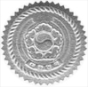
-
1989
- 동탑 산업훈장 수상
-
1984
- 부설연구소 설립
- 산업포장 수상 및 2천만불 수출탑 수상
- 한국무역협회 주최
- 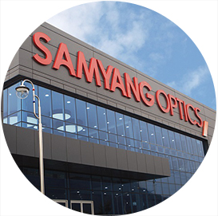
-
1981
- 1천만불 수출탑 수상
- 한국무역협회 주최
-
1979
- 삼양광학공업(주) 상호 변경
-
1972
- 회사설립 한국WAKO(주)